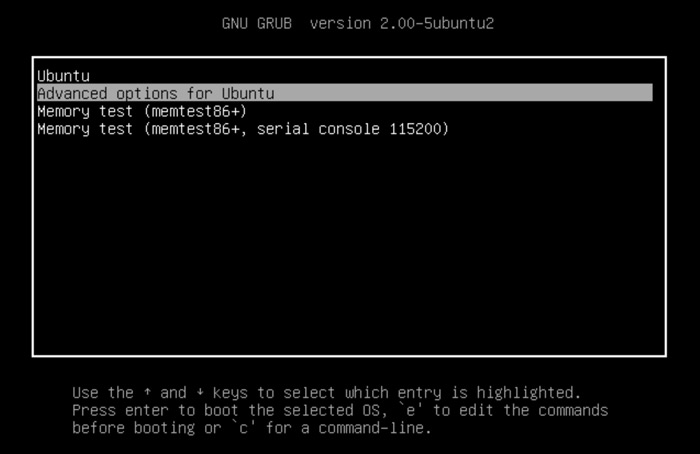

April 29, 2020
Today I upgraded my operating system on my desktop which was running Ubuntu 18.04 to Ubuntu 20.04. In the process of a simple upgrade I accidentally overwrote my grub bootloader(dual boot) and got locked out of my machine. In order to restore my grub bootloader I had to first research online on the correct forums and after some pain staking detective work I managed to find some solutions.The first thing I had to do was to enter the following commands at the grub prompt:-
The next step I had to take was to first create an Ubuntu live usb(iso). Once the live USB was created I had to change my desktop Bios boot setting to boot the USB on startup which was another task that resulted in me searching numerous online forums. Once the boot sequence was set I had to boot via USB.
Next was to select “Try Ubuntu without installing”. Once in the main menu then I had to locate the terminal and find a file called 40cdrom and remove it from its location in the /usr/lib/apt-setup/ubiquity/generator folder in the command line.
After this followed the next commands:
The above commands simply mount the partitions and repair the grub folder.
Finally I achieved the task of restoring my grub bootloader and had the latest version of Ubuntu running on my desktop. In the process of finding the solution to my problem I managed to extend my knowledge in (Terminal)command line arguments.